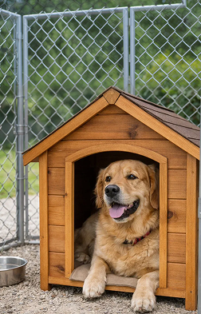
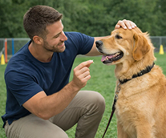
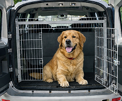

Зоогостиница
Сервис позволяет планировать и бронировать проживание ваших питомцев в зоогостинице. Выберите даты, чтобы
зарезервировать место для любимца и обеспечить ему качественный уход в ваше отсутствие. Также вы можете
забронировать даты в календаре (заселим день в день при наличии действующей ветеринарной справки) для того,
чтобы мы подготовили все необходимое для питомца.

Услуги и стоимость
Передержка
- Ежедневный осмотр
- Выгул 2 раза в день
- Гигиена: глаза, уши (по необходимости)
- Кормление вашими кормами 2 раза в день (корм промышленного производства)
- Дополнительный дневной выгул на поводке/в вольере
- Фото/видеоотчеты раз в день
- Индивидуальный график кормления (как дома)
- Заботливый присмотр за вашей собакой/li>

Ветеринарный контроль, вызов врача от 2 500 ₽
Дадим витамины или назначенные вашим врачом лекарства.
Вызовем врача, если питомец плохо себя почувствует.
Кинолог
Услуга индивидуальных занятий с кинологом осуществляется по запросу с
учетом особенностей поведения питомца и того, каких результатов вы хотите достичь.

Зоотакси
Мы готовы доставить собаку, если вы не имеете возможность её привезти или забрать.
Стоимость зависит от удалённости населённого пункта.
